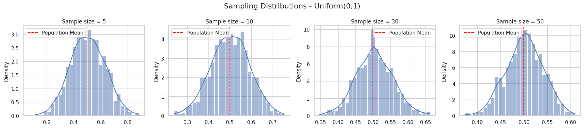
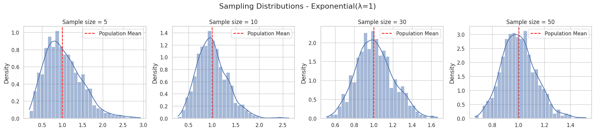
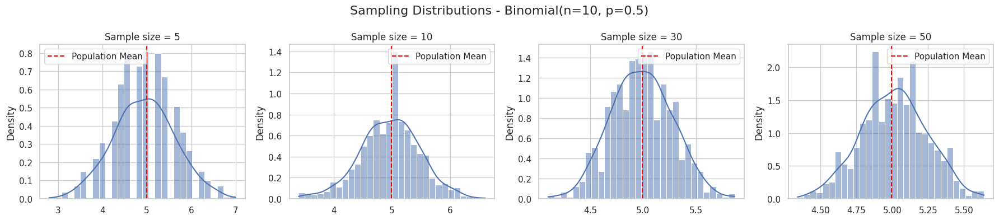
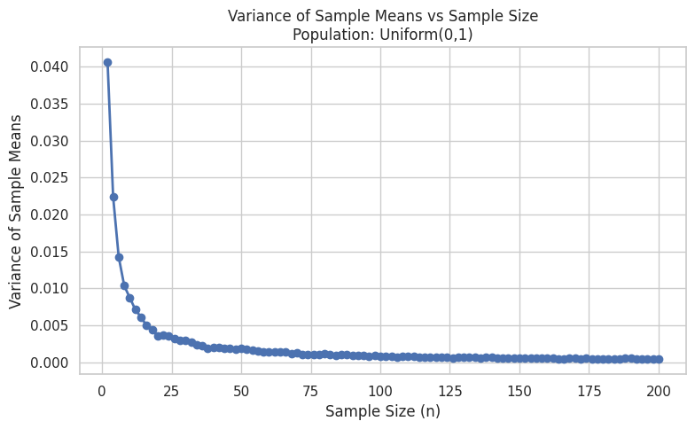
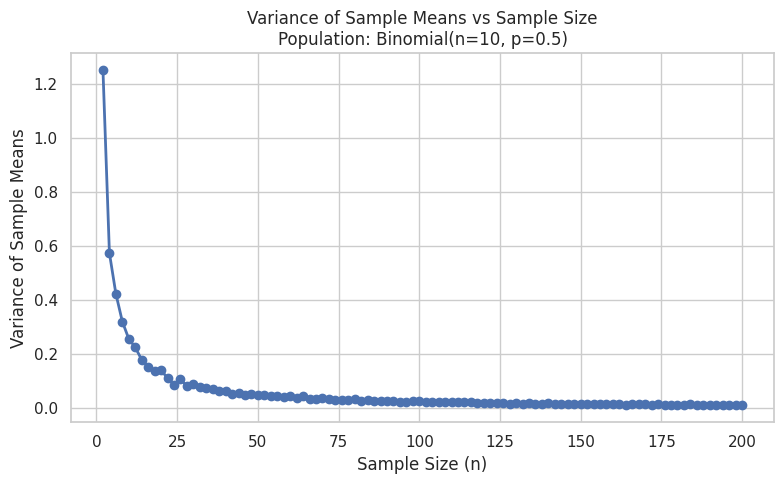

Problem 1
📊 Central Limit Theorem Simulation and Analysis
🧠 Motivation
The Central Limit Theorem (CLT) is one of the most important results in statistics. It states:
Given a sufficiently large sample size from a population with finite mean (\(\mu\)) and finite variance (\(\sigma^2\)), the sampling distribution of the sample mean will be approximately normally distributed, regardless of the population’s original distribution.
This simulation-based study provides a hands-on exploration of the CLT using Python.
📌 1. Simulating Sampling Distributions
Population Distributions
We explore the CLT using three different types of distributions:
-
Uniform Distribution:
$$ X \sim \text{Uniform}(a, b), \quad f(x) = \frac{1}{b-a} \text{ for } a \leq x \leq b $$ -
Exponential Distribution:
$$ X \sim \text{Exponential}(\lambda), \quad f(x) = \lambda e^{-\lambda x} \text{ for } x \geq 0 $$ -
Binomial Distribution:
$$ X \sim \text{Binomial}(n, p), \quad P(X = k) = \binom{n}{k} p^k (1-p)^{n-k} $$
🧪 2. Sampling and Visualization
import numpy as np
import matplotlib.pyplot as plt
import seaborn as sns
sns.set(style='whitegrid')
def simulate_clt(distribution_name, pop_data, sample_sizes=[5, 10, 30, 50], n_simulations=1000):
fig, axes = plt.subplots(1, len(sample_sizes), figsize=(18, 4))
fig.suptitle(f'Sampling Distributions - {distribution_name}', fontsize=16)
for idx, size in enumerate(sample_sizes):
sample_means = [np.mean(np.random.choice(pop_data, size, replace=True)) for _ in range(n_simulations)]
sns.histplot(sample_means, kde=True, ax=axes[idx], bins=30, stat="density")
axes[idx].set_title(f'Sample size = {size}')
axes[idx].axvline(np.mean(pop_data), color='red', linestyle='--', label='Population Mean')
axes[idx].legend()
plt.tight_layout()
plt.show()
# Generate population data
np.random.seed(42)
N = 100000 # Population size
# 1. Uniform(0, 1)
uniform_data = np.random.uniform(0, 1, N)
simulate_clt("Uniform(0,1)", uniform_data)
# 2. Exponential(λ=1)
exp_data = np.random.exponential(scale=1, size=N)
simulate_clt("Exponential(λ=1)", exp_data)
# 3. Binomial(n=10, p=0.5)
binom_data = np.random.binomial(n=10, p=0.5, size=N)
simulate_clt("Binomial(n=10, p=0.5)", binom_data)
  
📐 3. Parameter Exploration
A. Effect of Sample Size
- Small sample size (\(n=5\)): Sampling distribution retains the original distribution’s shape.
- Large sample size (\(n=30+\)): Distribution of sample means becomes bell-shaped and symmetric.
B. Effect of Population Variance
From theory:
Where:
- \(\bar{X}\): sample mean
- \(\sigma^2\): population variance
- \(n\): sample size
As \(n\) increases, the variance of the sampling distribution decreases. The distribution becomes narrower, meaning more precise estimates of the population mean.
C. Visual Example: Varying Variance
def plot_variance_effect(data, sample_size=30):
sample_means = [np.mean(np.random.choice(data, sample_size, replace=True)) for _ in range(1000)]
plt.figure(figsize=(7, 4))
sns.histplot(sample_means, kde=True, stat="density")
plt.axvline(np.mean(data), color='red', linestyle='--', label='Population Mean')
plt.title(f'Sample Mean Distribution (n={sample_size})')
plt.xlabel('Sample Mean')
plt.ylabel('Density')
plt.legend()
plt.show()
# Call for examples
plot_variance_effect(exp_data)
plot_variance_effect(uniform_data)
📉 Variance vs. Sample Size
import numpy as np
import matplotlib.pyplot as plt
import seaborn as sns
sns.set(style="whitegrid")
np.random.seed(42)
# Popülasyon verisi üretimi
N = 100000
pop_uniform = np.random.uniform(0, 1, N)
pop_exponential = np.random.exponential(scale=1, size=N)
pop_binomial = np.random.binomial(n=10, p=0.5, size=N)
populations = {
"Uniform(0,1)": pop_uniform,
"Exponential(λ=1)": pop_exponential,
"Binomial(n=10, p=0.5)": pop_binomial
}
# Varyans vs Örneklem Boyutu çizimi
def plot_variance_vs_sample_size(population, pop_name):
sample_sizes = np.arange(2, 201, 2) # 2'den 200'e kadar örneklem boyutları
sample_variances = []
for n in sample_sizes:
sample_means = [np.mean(np.random.choice(population, n, replace=True)) for _ in range(500)]
sample_variances.append(np.var(sample_means))
plt.figure(figsize=(8, 5))
plt.plot(sample_sizes, sample_variances, marker='o', linewidth=2)
plt.title(f'Variance of Sample Means vs Sample Size\nPopulation: {pop_name}')
plt.xlabel('Sample Size (n)')
plt.ylabel('Variance of Sample Means')
plt.grid(True)
plt.tight_layout()
plt.show()
# Tüm dağılımlar için çiz
for name, data in populations.items():
plot_variance_vs_sample_size(data, name)
 
These plots demonstrate how the variance of sample means decreases as the sample size increases, which is a key implication of the Central Limit Theorem (CLT).
🔍 Code Explanation
- The code runs simulations for three population distributions: Uniform, Exponential, and Binomial.
- For each sample size (from \(n = 2\) to \(n = 200\)):
- 500 samples are drawn with replacement.
- The mean of each sample is calculated.
- The variance of these 500 sample means is computed.
- A line plot is generated showing sample size vs. variance of sample means.
📌 Theoretical Background
The variance of the sampling distribution of the mean is given by:
This formula tells us that as the sample size (\(n\)) increases, the variance of the sample mean decreases. In other words, the distribution of sample means becomes tighter around the population mean.
📈 Plot Interpretation
- The x-axis represents the sample size.
- The y-axis represents the variance of the sample means.
- For all distributions, we observe a decline in variance as sample size increases.
- This confirms that larger samples yield more precise estimates of the population mean, in accordance with the CLT.
🌍 4. Practical Applications of CLT
✅ Estimating Population Parameters
The CLT allows us to construct confidence intervals around the sample mean, assuming a normal distribution of the sampling distribution:
Where:
- \(\bar{X}\): sample mean
- \(z^*\): critical value from standard normal distribution (e.g., 1.96 for 95% CI)
- \(\sigma\): population standard deviation
- \(n\): sample size
🏭 Quality Control
In manufacturing, companies use samples to monitor process performance. The CLT allows interpretation of sample means over time to detect defects or shifts in the process.
💹 Finance and Risk
Risk analysts use the CLT to assume normality when modeling average returns, enabling value-at-risk (VaR) calculations and financial forecasting.
📚 Conclusion
- The Central Limit Theorem confirms that the distribution of sample means converges to normality as sample size increases, regardless of the original population shape.
- Simulations verify this behavior for uniform, exponential, and binomial distributions.
- Larger sample sizes reduce the variance of the sample mean, increasing the accuracy of estimates.
📎 References & Resources
- Khan Academy — Central Limit Theorem
- OpenIntro Statistics (free textbook)
- Python Libraries:
- NumPy
- Matplotlib
- Seaborn